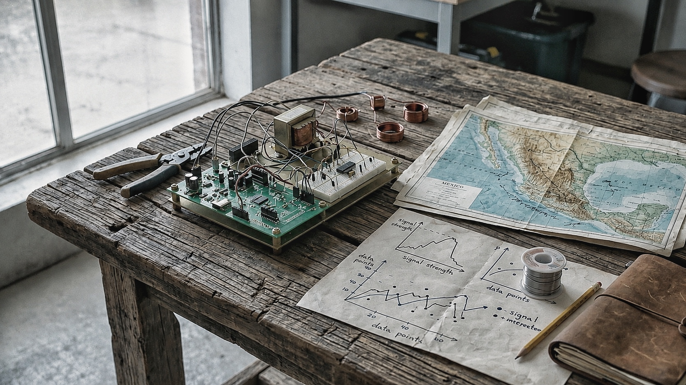

Pienso los sistemas no como estructuras cerradas, sino como dispositivos provisionales para leer —y perturbar— la realidad. En este laboratorio, la investigación abandona por momentos la página para volverse juego, simulación e interfaz: Polis convierte la teoría política en una civilización hecha de decisiones y consecuencias; Limes traduce identidades, discursos, capacidades y conflictos en escenarios estratégicos; Berlín 77 regresa, treinta años después, como archivo, grafo y territorio navegable. Los tres proyectos comparten una misma sospecha: todo modelo que describe el mundo interviene también en él. Son, por ello, máquinas críticas, necesariamente incompletas, que hacen visible la arquitectura móvil del poder, la memoria y el deseo, y preguntan qué ocurre cuando interpretar deja de ser sólo una forma de lectura para convertirse en una forma de construir mundo.
Investigación
Sistema
Proyectos que exploran poder, memoria y estrategia mediante simulación, grafos e inteligencia crítica para construir nuevas formas de interpretar el mundo.

Polis
POLIS es un videojuego de estrategia que transforma teoría política, economía y ética en decisiones capaces de modelar civilizaciones y formas de mundo.
Limes
Limes es una plataforma de inteligencia estratégica que integra semiótica, teoría de juegos y simulación para analizar escenarios complejos y apoyar la toma de decisiones.
Berlín 77 (1997-2027)
Una edición conmemorativa de Berlín 77, de Carlos Adolfo Gutiérrez Vidal, a treinta años de su primera publicación.